Hands-on Lab: Content Discovery and Visual EE Building
In this lab, you will leverage the Automation Portal to unify disparate automation sources and transition from manual image creation to a streamlined, GUI-based Execution Environment (EE) workflow.
Building a Custom Execution Environment
We will now use the Visual EE Builder to generate a container definition without writing a single line of YAML or ansible-builder configuration files.
-
Login to the Automation Portal and navigate to Execution Environments > Created > Start from scratch Template. This will launch the Visual EE Builder wizard.
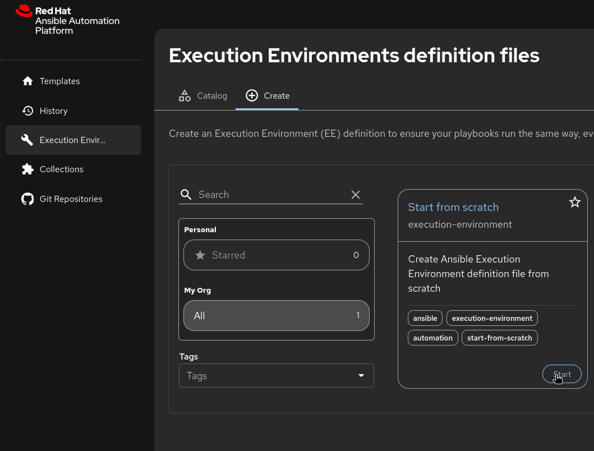
-
Select the Execution Environment images which you wanted to use as base image. I will be using the Red Hat Ansible Minimal EE - Ansible Core 2.16 (RHEL 9) as base image for this lab:
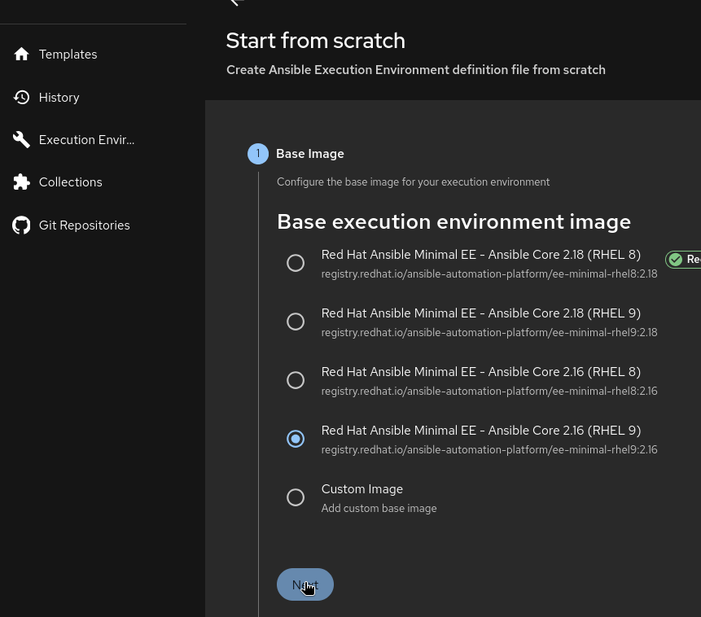
-
Then we can add collection you can skip and move to the next step. if you don’t have any collection to add or use community collection to add. I am adding a custom collection opentraining.mta_dev_lightspeed from my repo.
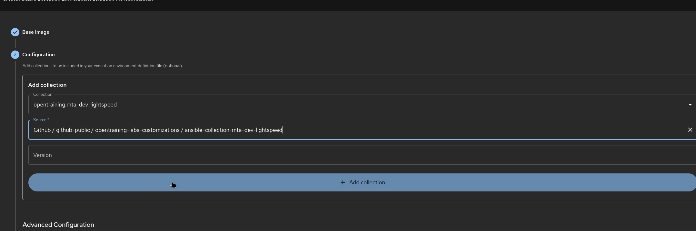
-
Inject Dependencies:
-
Click the Dependencies tab.
-
In the Python Requirements section, add
boto3. -
In the System Packages section, add
gcc.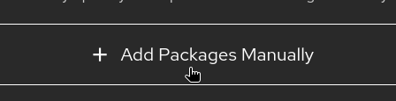
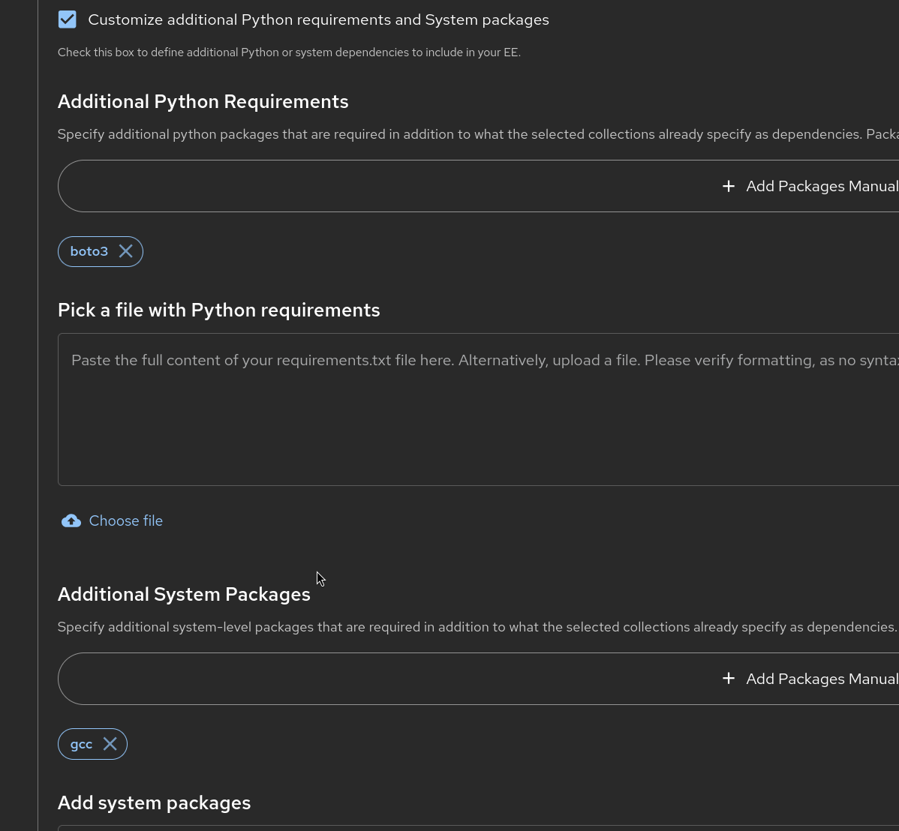
-
-
Define Build Steps:
-
Navigate to Custom Steps.
-
Add a Pre-build step: Enter a shell command to verify the file system structure.
-
Add a Post-build step: Include a command to run a security scan script (e.g.,
ansible-lint -v).
-
| I am keeping the pre-build and post-build steps empty for this lab. You can add your own pre-build and post-build steps as per your requirement. |
-
Destination and Build Step here you just have to provide the information about the EE names tag with which you wanted to create and with what names you wanted to publish this EE imaged to the registry. Please check the below screenshot on what information i am providing to create EE.
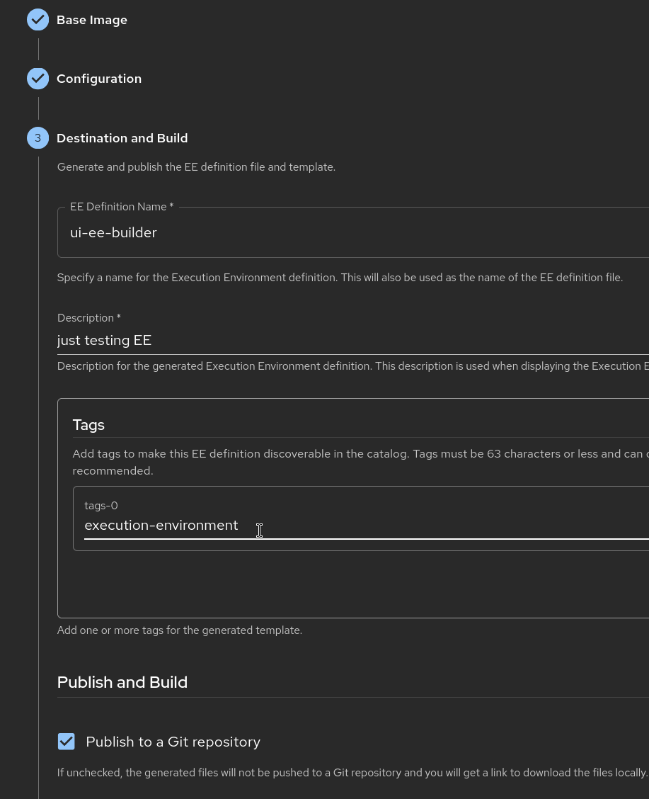
-
Lets Work on the step Publish and Build which will be used to publish the EE definition to the GitHub repository and trigger the CI/CD pipeline to build the container image and push it to the registry.
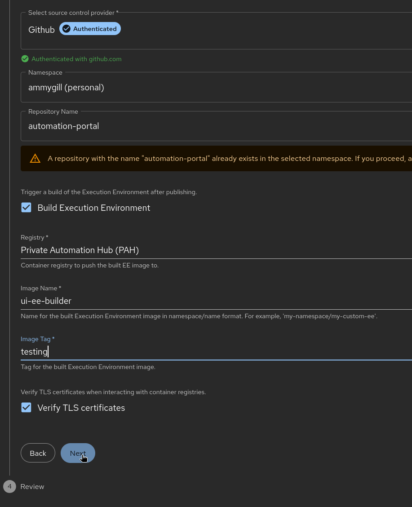
-
Finalize and Publish:
-
Review the generated preview.
-
Click Save & Publish. Select your GitHub repository; the builder will automatically push the
execution-environment.ymland associated metadata to your repository.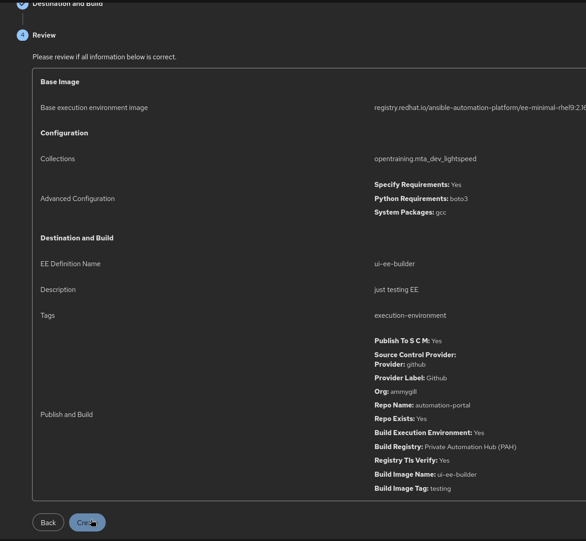
-
-
The PR will be raised to the GitHub repository and you can see the PR in your GitHub repository. You can merge the PR to the main branch and this will trigger the CI/CD pipeline to build the container image and push it to the registry as per credentials saved in the Chapter 1.
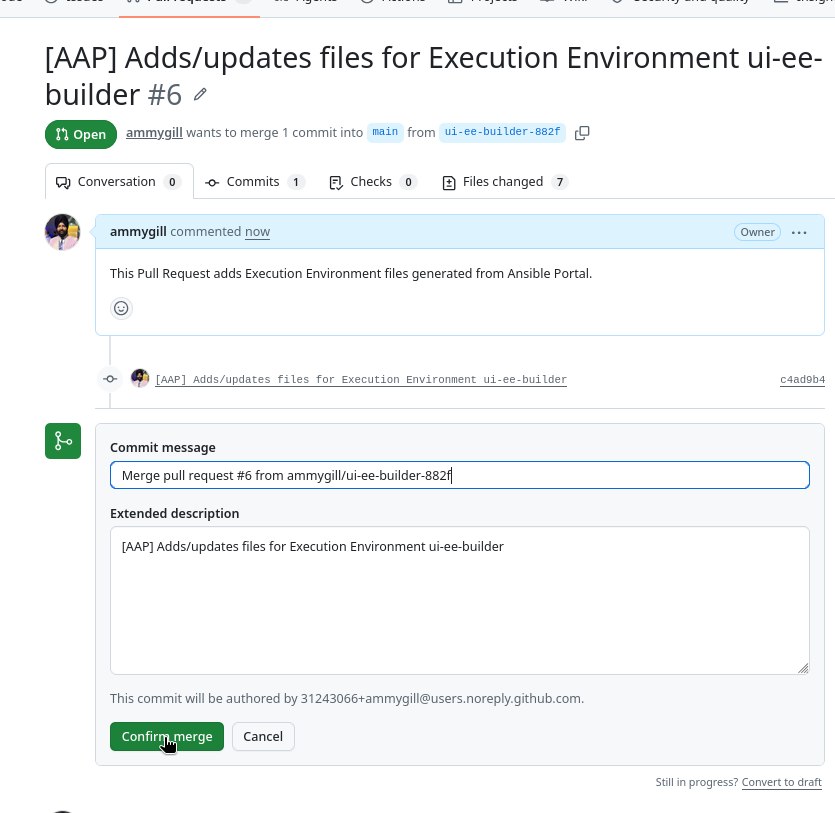
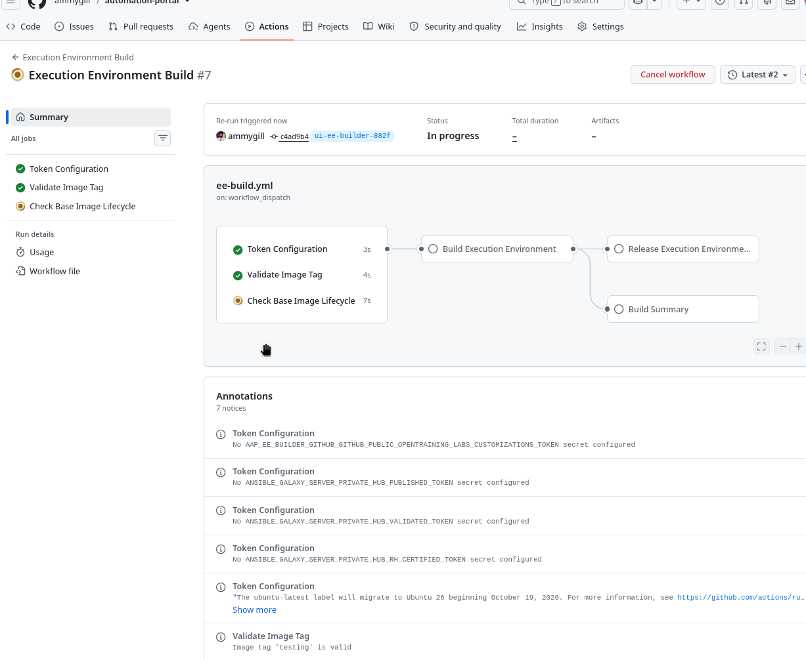
-
Once the Builde is completed you can see the image is pushed to the registry in this case it will be on the Automation content in the ansible automation platform and you can see the image in the registry.
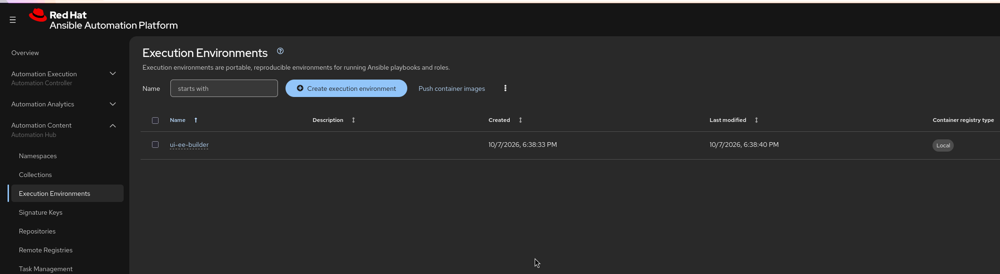
Congratulations! You have successfully created a custom Execution Environment using the Visual EE Builder, integrated it with GitHub for version control, and automated the build and deployment process through CI/CD pipelines. This approach ensures that your EEs are consistent, reproducible, and compliant with organizational standards.